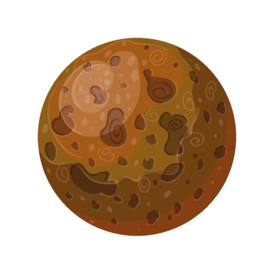
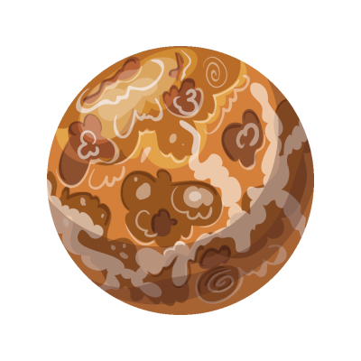
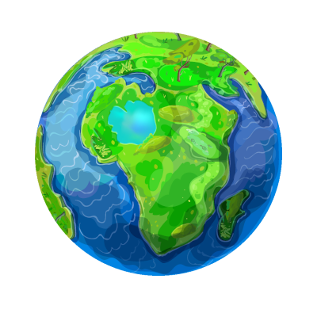
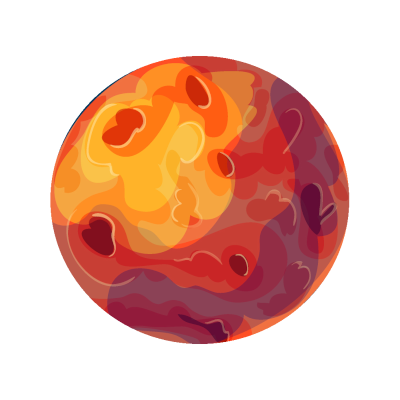
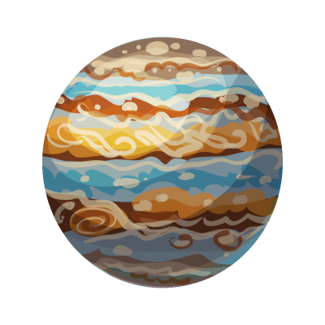
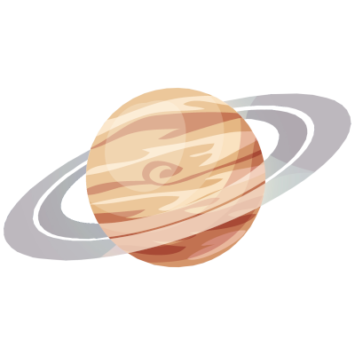
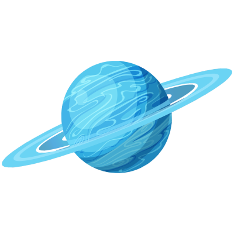
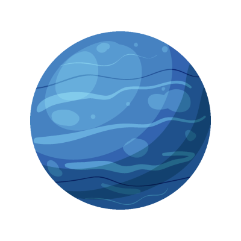

Planetas do Sistema Solar
O Sistema Solar corresponde a um conjunto formado pelo Sol, asteroides, satélites, meteoros, cometas e oito planetas com formas esféricas os quais descrevem órbitas elípticas.
Os nomes dos planetas do sistema solar em sua ordem são:
- Mercúrio
- Vênus
- Terra
- Marte
- Júpiter
- Saturno
- Urano
- Netuno
Observe que antes de 2006, Plutão era considerado um planeta do sistema solar, no entanto, pesquisas da União Astronômica Internacional (UAI) definiram três conceitos fundamentais para a classificação dos planetas:
- orbitar ao redor de uma estrela;
- possuir gravidade própria;
- ter uma órbita livre.
Assim, Plutão foi considerado um planeta anão por não possuir uma órbita livre.
Mercúrio
Mercúrio é o planeta mais próximo do Sol. É um planeta rochoso, destituído de satélites e atmosfera rarefeita, sendo também o menor planeta do sistema solar. Por esse motivo apresenta temperaturas bastante elevadas de aproximadamente 400°C.
Por outro lado, a face do planeta não iluminada pelo sol pode atingir temperaturas de aproximadamente -170 °C. O movimento de rotação do planeta é de 59 dias, enquanto o de translação é de 87 dias.
Saiba mais sobre Mercúrio.
Vênus
Conhecido como “Estrela d’alva”, por causa de seu forte brilho, Vênus tal qual Mercúrio é um planeta que não possui satélite. Visível do nosso planeta, Vênus é o segundo planeta a partir do Sol e o mais perto do planeta Terra.
Seu movimento de rotação é um dos mais lentos, com 243 dias para completar a volta em torno de si mesmo; e, o movimento de translação de 225 dias aproximadamente.
Curioso notar que mesmo sendo o segundo planeta a partir do Sol (depois de Mercúrio), Vênus é o planeta mais quente do sistema solar, com temperaturas que podem atingir 480°C. Assemelha-se com o planeta Terra no tocante ao tamanho, composição, estrutura, massa, densidade e força gravitacional.
Saiba mais sobre Vênus.
Terra
Terceiro planeta do sistema solar a partir do Sol, o planeta Terra é rochoso, com atmosfera gasosa e temperatura média de 15°C.
Possui um satélite natural, a Lua, e a quantidade de água existente no planeta, também chamado de “planeta azul”, aliada à quantidade de oxigênio, permitem o desenvolvimento da vida no planeta, sendo o único conhecido do sistema solar com vida humana.
O movimento de rotação terrestre dura aproximadamente 24 horas (tempo de 1 dia); enquanto o movimento de translação do planeta dura 365 dias (tempo de 1 ano), exceto nos anos bissextos, os quais apresentam 366 dias.
Saiba mais sobre a Terra.
Marte
Quarto planeta a partir do Sol e o mais visível do planeta Terra, Marte possui dois satélites naturais “Fobos e Deimos”, sendo o segundo menor planeta do sistema solar, atrás de Mercúrio.
Também chamado de “planeta vermelho”, devido às partículas de óxido de ferro presentes em sua atmosfera, o planeta Marte é um planeta rochoso, frio e seco.
O movimento de rotação de Marte assemelha-se ao da Terra, com duração de 24 horas e 37 minutos, enquanto que o movimento de translação do planeta é de 687 dias.
Saiba mais sobre Marte.
Júpiter
Júpiter é o maior planeta do sistema solar. É um planeta gasoso (composto sobretudo por hidrogênio), 1.300 vezes maior do que o planeta Terra.
Quinto planeta a partir do Sol, Júpiter possui o maior número de satélites, 79 satélites, e apresenta temperaturas de até -150°C.
Seu movimento de rotação dura 9 horas e 55 minutos, considerado o movimento de rotação mais rápido de todos os planetas do sistema solar; enquanto o movimento de translação do planeta corresponde a cerca de 12 anos terrestres.
Saiba mais sobre Júpiter.
Saturno
Segundo maior planeta do sistema solar, depois de Júpiter, Saturno é conhecido pelos seus anéis, formados por rocha, gelo e poeira.
Sexto planeta a partir do sol, depois de Júpiter, Saturno é o planeta do sistema solar que possui muitos satélites: 82 luas.
Composto basicamente de hidrogênio, ele possui temperatura média de -140°C, sendo que seu movimento de rotação dura 10 horas e 14 minutos e o de translação cerca de 30 anos terrestres.
Saiba mais sobre Saturno.
Urano
Terceiro maior planeta do sistema solar e sétimo planeta a partir do Sol, Urano é um planeta gasoso que apresenta médias de temperatura de -185°C e possui 27 satélites.
Possui uma característica interessante tocante ao seu eixo de rotação com quase noventa graus em relação com o plano de sua órbita, que por sua vez é muito extensa.
Dessa forma, o movimento de rotação do planeta dura 17 horas aproximadamente, enquanto o movimento de translação dura cerca de 84 anos terrestres.
Saiba mais sobre Urano.
Netuno
Planeta do sistema solar mais distante do Sol e o quarto maior em tamanho, Netuno possui 14 satélites naturais e apresenta temperaturas médias de aproximadamente -200°C.
Trata-se de um planeta gasoso, formado principalmente por hidrogênio, hélio, amônia, metano e água. O movimento de rotação do planeta dura cerca de 16 horas, enquanto sua translação equivale a 164 anos terrestres.
Saiba mais sobre Netuno.